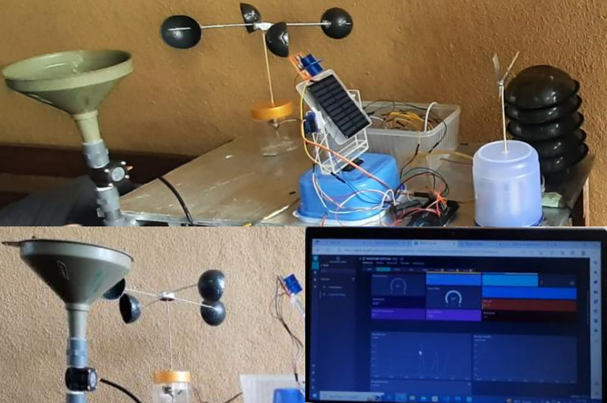

Vision-based redundant robotic manipulator for accessing confined spaces
A 7-DOF redundant robotic manipulator designed to access confined spaces. It features a unique kinematic configuration using oblique swivel joints, an internal utility access path, and an RGB-D vision system paired with PSO-based path planning algorithms for collision-free autonomous path planning.
Automated Multi-Pass 3D Laser Scanning System
An automated 3D laser scanning system built on a motorized rotational platform. It employs a novel closed-loop, five-parameter kinematic calibration framework powered by meta heuristic optimization to mathematically correct hardware misalignments and eliminate geometric distortions.
Design and Development of Rail Mounted 5DOF Robot Arm for Storage Applications
A rail-mounted 5-DOF robotic manipulator deeloped for automated storage and retrieval applications. The system integrates a YOLOv8 computer vision pipeline for object detection, alongside a cloud-connected mobile app for real-time digital twin synchronization and teleoperation.
Design and Simulation of a MEMS Based platform for Microscope Sample Manipulation
Designed out-of-plane bimorph thermal actuators driven by differential thermal expansion. Conducted coupled electrical, thermal, and structural mechanics simulations and analysis in COMSOL Multiphysics.
Development of a Smart Factory Automation System
PLC-driven automation line featuring conveyors, stamping modules, and pneumatic stack magazines and transfer cylinders. Integrated optical sensors based order-specific routing and HMI diagnostics.
Development of an Autonomous Wheeled Robot with Path-Following and Sign Recognition Capabilities
Developed a differential-drive mobile robot featuring PID line following, ultrasonic obstacle avoidance, mobile app manual control, Raspberry Pi interfacing, and real-time YOLOv8-n sign recognition.

Smart Environment Monitoring Station
Developed a ESP32-based meteorological station featuring custom-calibrated sensors and a closed-loop dual-axis solar tracker. Deployed real-time web dashboards via Blynk.